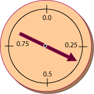

Antwort:
Ja. Zufällige Gleitpunktzahlen sind für Simulationen und mathematische und wissenschaftliche Programmierung notwendig.
Ja. Zufällige Gleitpunktzahlen sind für Simulationen und mathematische und wissenschaftliche Programmierung notwendig.
Random-Methoden
Hier sind ein paar weitere Methoden der Klasse Random:
float nextFloat()
— Gibt eine Pseudo-Zufallszahl als Gleitpunktwert mit einfacher Genauigkeit im Bereich von 0.0 bis aber nicht inklusive 1.0 zurück.
double nextDouble()
— Gibt eine Pseudo-Zufallszahl als Gleitpunktwert mit doppelter Genauigkeit im Bereich von 0.0 bis aber nicht inklusive 1.0 zurück.
double nextGaussian()
— Gibt eine Pseudo-Zufallszahl als Gleitpunktwert mit doppelter Genauigkeit aus einer Gauß-Verteilung (auch Normalverteilung genannt) zurück. Der Mittelwert der Verteilung ist 1.0 und die Standardabweichung ist 1.0.

Beachten Sie, dass nextFloat() und nextDouble()
Gleitpunktwerte im Bereich von [0.0 bis 1.0)
Um sich einen Gleitpunkt-Zufallszahlengenerator bildlich vorzustellen, denken Sie an einen Drehpfeil, der in der Mitte einer Scheibe mit einem Umfang von 12 Zoll angebracht ist. Um eine zufällige Gleitpunktzahl zu erzeugen, beschleunigen Sie den Drehpfeil und messen dann die Entfernung entlang der Scheibe ausgehend von der Nullmarke.
Wenn der Umfang exakt 12 Zoll ist, dann ist die "0.0"- und "1.0"-Marke auf der Scheibe dieselbe. Das veranschaulicht die Sache nicht zwar nicht exakt, aber die 1.0 ist aus dem Bereich ausgeschlossen, so dass dieses Problem vermieden wird.
Angenommen Sie wollen eine double Zufallszahl im Bereich von 1.0 bis (aber nicht einschließlich) 10.0.
Wie können Sie diesen Bereich mit nextDouble() bekommen?